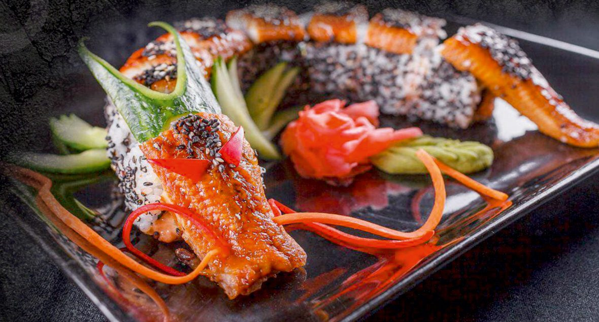

Prinzipien
- Ruhe vor Effekt. Viel dunkler Raum, ein Gedanke pro Bildschirm.
- Das Essen ist der Star. Gold nur für Namen, Preise, Handlungen.
- Japanisch durch Form, nicht durch Schrift. Ensō, Pinselstrich, Wellenmuster, Laterne, Siegel.
- Eine Bewegung pro Bereich – langsam, leise, abschaltbar.
- Keine japanischen Schriftzeichen im UI, keine Kirschblüten-Klischees, keine bunten Verläufe.
Farben
Direkt aus der Speisekarte abgeleitet. Rot (Koi) und Orange (Laterne) sind Akzente, keine Flächen.
Slate#111111 · Hintergrund
Surface#1A1A1A · Karten
Line#343434 · Linien
Reis#F2EDE3 · Text
Stein#A39C90 · Beschreibung
Gold#D4A72C · Namen, Preise, CTA
Koi#C62A1F · Siegel, „geschlossen“
Laterne#E07A2E · Glühen, Asia-Bereich
Verhältnis: 80 % Slate · 15 % Text · 4 % Gold · 1 % Koi
Typografie
Alegreya (Serif, kalligrafisch) für Titel, Gerichte und Preise – nah an der gedruckten Karte. Alegreya Sans für Fließtext. Selbst gehostet.
DisplayWillkommen im Do
H2 · GoldSignature Rolls
LeadMeisterwerke unseres Sushi-Chefs
GerichtCrispy Tiger
Preis14,90 €
TextKross frittierte Sushi-Rolle, umhüllt von einer goldenen Panko-Panade, verfeinert mit Sesam.
Label8 Stk. · Inside Out
Oberflächen & Muster
Schieferstein (Rauschen + Vignette, ohne Bilddatei), Seigaiha-Wellen bei 7 % für wechselnde Bereiche, warmer Laternenschein nur für Asia und den Schluss-CTA.
Slate
Wellen (Seigaiha)
Laternenschein
Titelrahmen & Pinselstrich
Das Erkennungszeichen der Karte: feiner Goldrahmen, Stückzahl in der Linie. Darunter ein Pinselstrich, der sich beim Scrollen zeichnet.
Ura-Maki8 STK. (INSIDE OUT)
Eine köstliche umgekehrte Reisrolle mit zartem Reis außen, feinstem Nori innen und gefüllt mit frischem Fisch.
Buttons, Tags & Siegel
Mindesthöhe 48 px (Daumen). Das rote Siegel ersetzt den japanischen Stempel – nur lateinische Schrift.
Speisekarte – Zeilen
Code · Name · Punktlinie · Preis. Zutaten mit „|“ wie in der Karte. Varianten (A/B/C) mit eigenem Preis.
Sushi-Band (Kaiten)
Desktop: läuft langsam, stoppt bei Hover. Mobil/Tablet: wischen, rastet pro Teller ein. Tellerrand-Farbe = Kategorie.